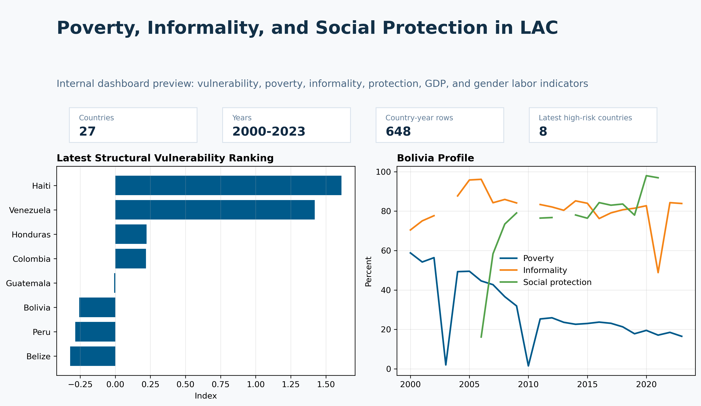
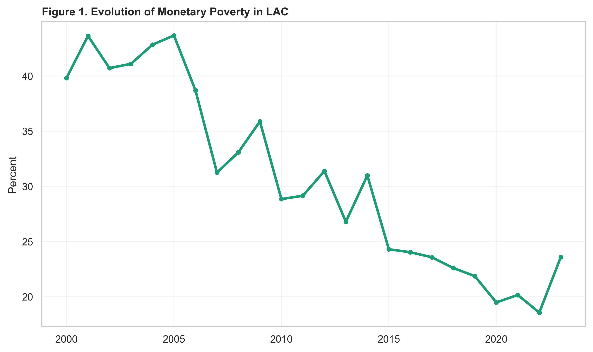
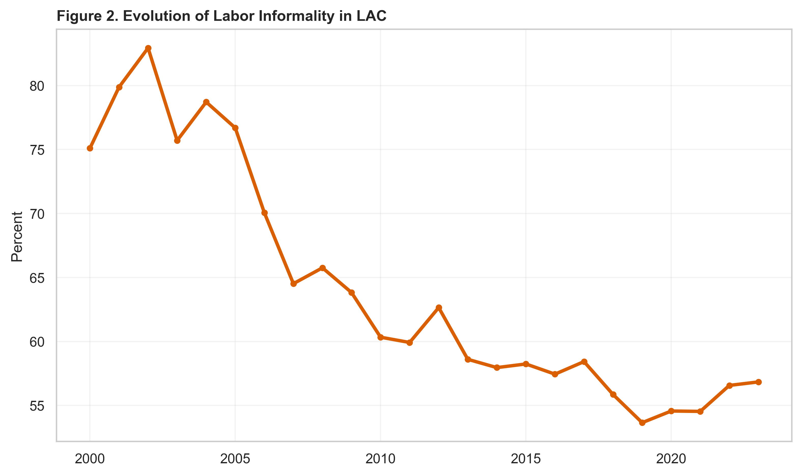
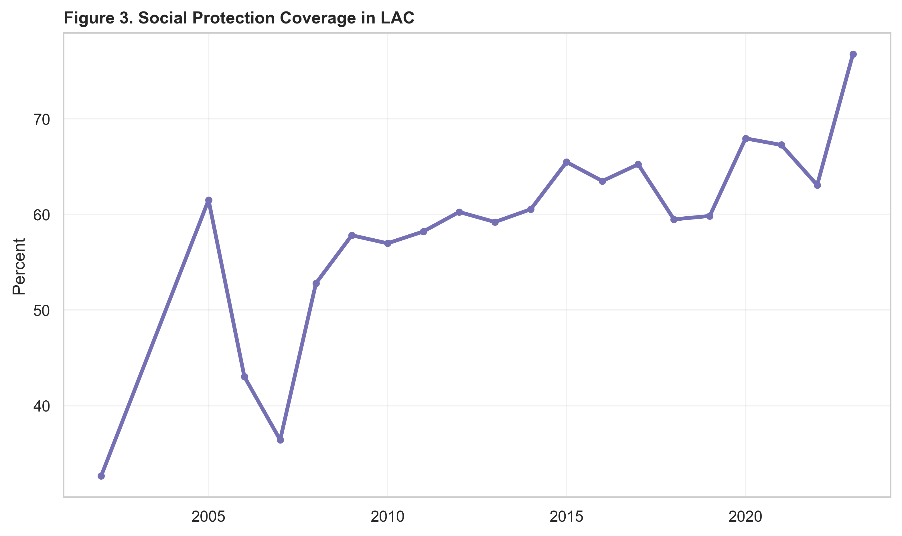
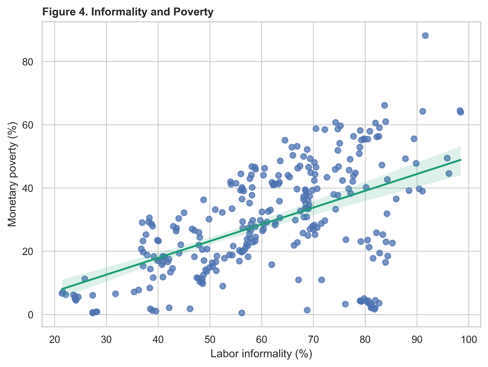
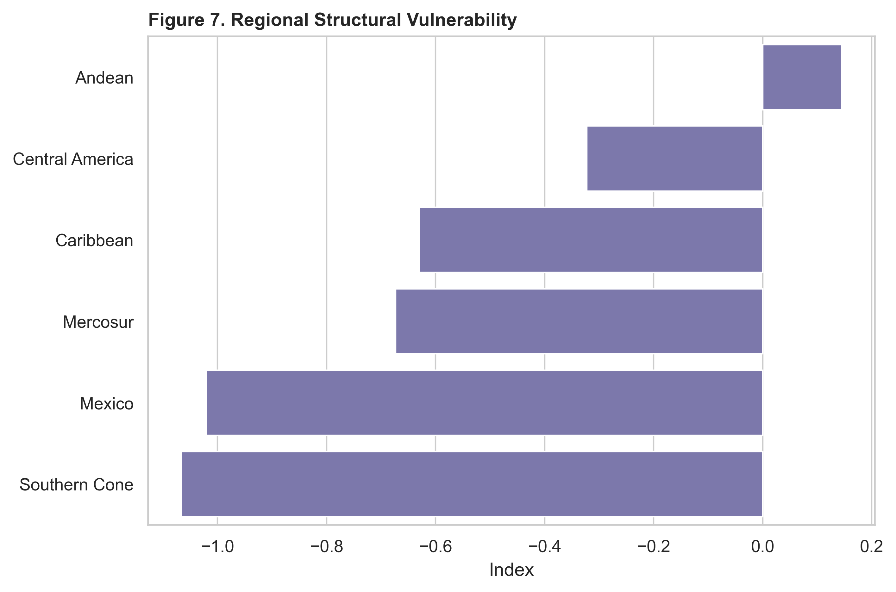
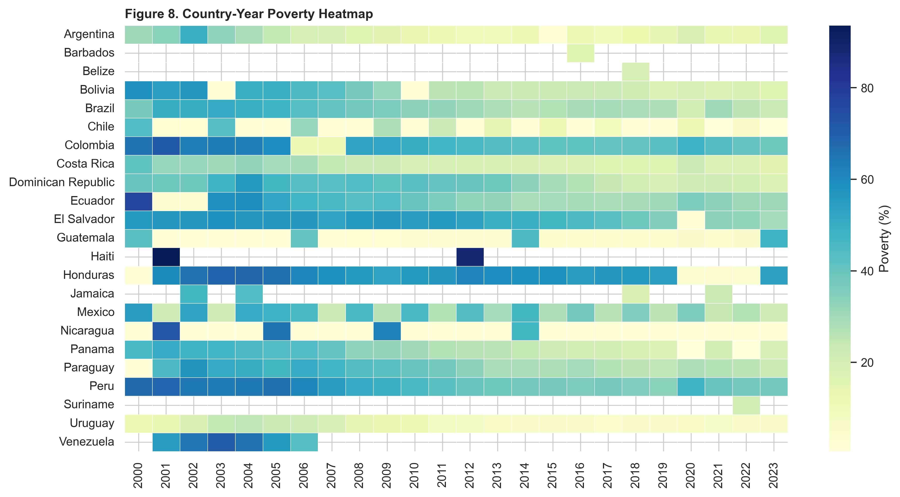
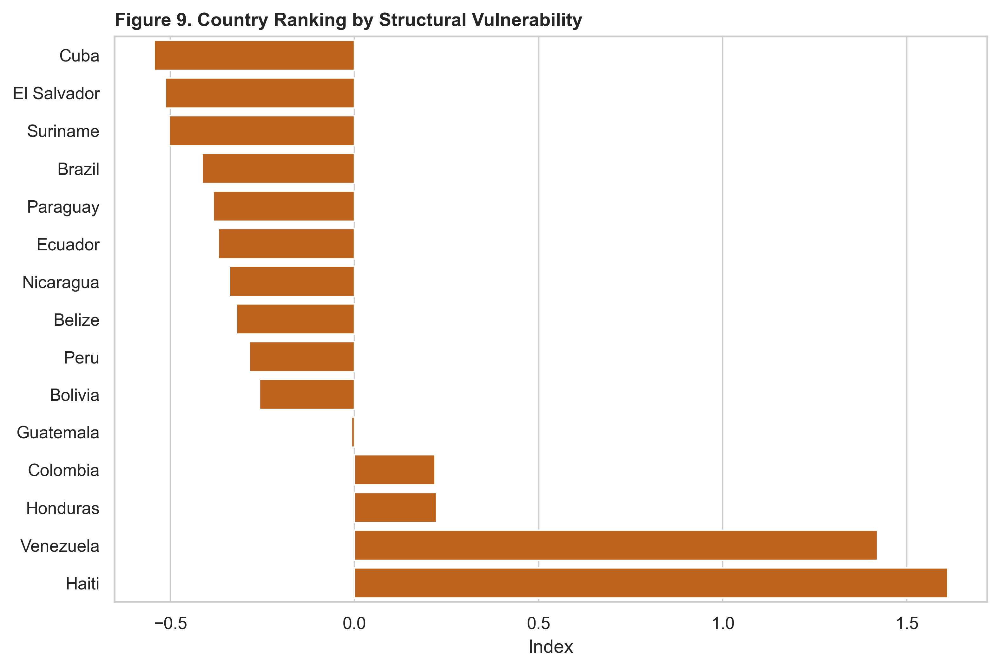
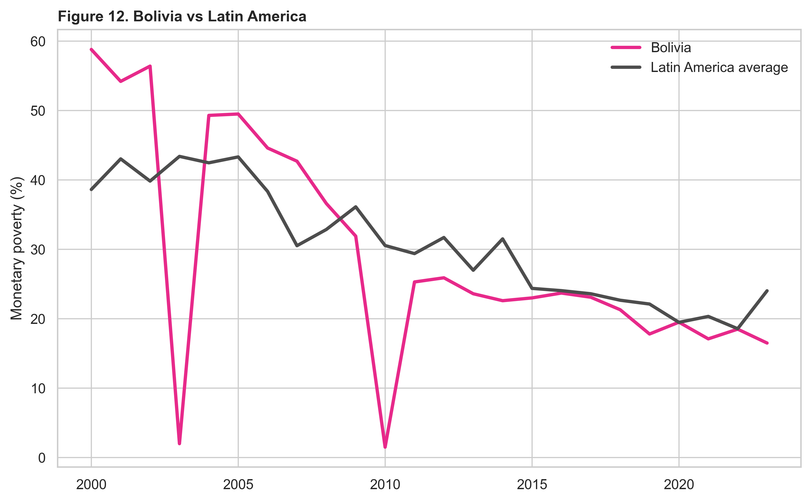

Coverage is broad but uneven
The public panel covers 27 countries and long time spans, while source coverage varies substantially by indicator.
Development Analytics Lab
A reproducible panel-data framework for understanding poverty dynamics, labor informality and social-protection coverage across Latin America.
The project combines country-year panel construction, data-quality validation, missingness analysis, indicator engineering, dashboard communication and policy-oriented interpretation.
Executive snapshot
Metrics are reused from the existing README, validation assets and generated tables. No indicators were recalculated for this web-quality phase.
Key findings
The project is descriptive and diagnostic. The dashboard and figures do not claim causal effects of informality or social protection on poverty.
The public panel covers 27 countries and long time spans, while source coverage varies substantially by indicator.
Labor informality is a binding analytical dimension and remains high in several country profiles, including Bolivia.
Social-protection coverage has high missingness and is one of the main limits for complete cross-country modelling.
The Structural Vulnerability Index combines poverty, informality, unemployment, inequality, social protection and GDP per capita.
The repository includes a Bolivia-versus-Latin-America visual profile for regional interpretation.
Country rankings should be read as discussion tools, not automatic policy prescriptions.
Dashboard
The interactive dashboard already exists as a rendered HTML product under `docs/dashboard/index.html`. This page provides the recruiter-facing entry point and static gallery.

Country profiles, rankings, summary indicators, Bolivia profile and descriptive policy-oriented views.
Main figures
Eight existing PNG figures are reused from `docs/assets/figures`. No scientific graphics were regenerated.

Tracks the regional average poverty headcount over time.

Shows whether informality moved with or against poverty over the preferred panel window.

Summarizes expansion or contraction in the central mitigating variable.

Displays the unconditional relationship motivating panel analysis.

Static fallback for country-year structural vulnerability mapping.

Highlights panel coverage, persistence and country-specific poverty episodes.

Ranks latest observations by structural vulnerability index.

Contrasts Bolivia's poverty trajectory with the regional average.
Executive tables
Tables are linked from GitHub because `outputs/` is outside the `/docs` Pages root. Nothing was regenerated.
Core indicator distributions for poverty, informality, social protection and vulnerability.
Open tableLatest observations ranked by the Structural Vulnerability Index.
Open tableIndicator summary by regional grouping.
Open tableMissingness patterns in analytical variables and coverage constraints.
Open tableData sources
The repository combines documented public indicators into a country-year panel. Source constraints and data lineage are documented separately.
SEDLAC, World Development Indicators, ILOSTAT, ASPIRE and CEPALSTAT.
Processed panel, dashboard panel, metadata, codebook, validation and dashboard documentation.
Data quality
Missingness and coverage are central constraints, especially for social protection, labor informality and complete model-ready samples.
The README reports 0 duplicate country-year rows and 0 impossible percentage values.
Table 5 documents high missingness for several labor and social-expenditure variables.
Dashboard views are descriptive diagnostics and keep source coverage visible.
Analytical workflow
Country-year indicators are stored in `data/processed/`.
Panel integrity, impossible values and coverage constraints are documented.
Core poverty, informality, social protection and vulnerability indicators are prepared.
Figures, tables, dashboard panels and country profiles are produced by the existing workflow.
Interactive dashboard and static gallery are published under `/docs` for GitHub Pages.
Methodology
The workflow constructs a harmonized country-year panel, standardizes country identifiers, combines poverty and labor-market indicators, and builds a descriptive Structural Vulnerability Index.
Multi-source country-year data are harmonized into public processed panel files.
Structural vulnerability combines poverty, informality, unemployment, inequality, social protection and GDP per capita.
All dashboard outputs remain associational and descriptive, with no causal claims.
Reproducibility
The public workflow starts from processed panel files already committed to the repository. A full raw rebuild requires local data archives and was not executed here.
Reproducibility guide and repository architecture describe the public workflow.
Repository tests cover panel integrity, outputs and publication readiness.
No pipelines, models, indicators, figures or tables were regenerated.
Limitations
Citation
Use CITATION.cff for machine-readable citation metadata. No DOI is currently listed for this repository.
Open CITATION.cffBack to portfolio
Return to the portfolio hub or inspect the repository source and documentation.